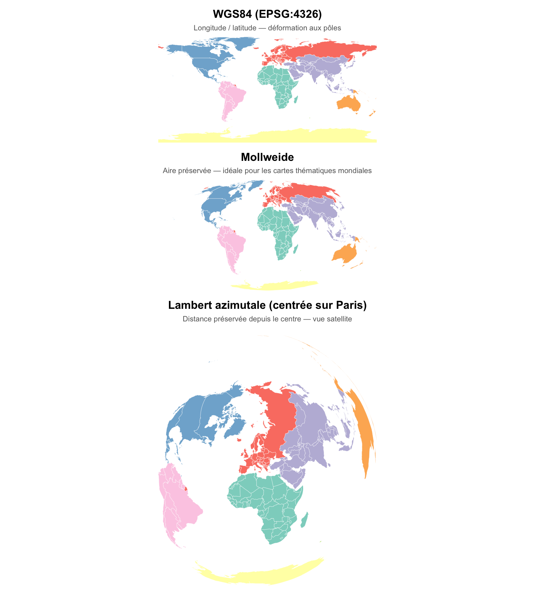
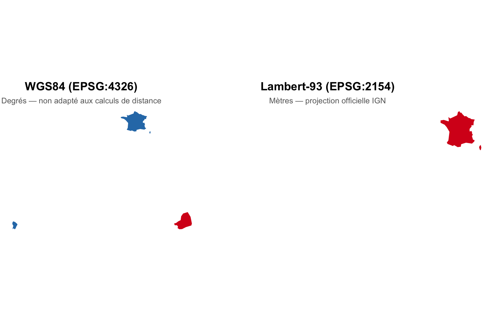

Code
library(sf)
library(spData)
library(ggplot2)
library(dplyr)
library(patchwork)
Imaginez deux couches de données : des communes françaises en Lambert-93 et des points GPS en WGS84. Si vous les superposez sans harmoniser les SCR, vos communes peuvent se retrouver au milieu de l’océan Atlantique. Les Systèmes de Coordonnées de Référence (SCR) définissent ce que signifient vos coordonnées — sans eux, un point (2.35, 48.85) ne veut rien dire.
Toujours vérifier et harmoniser les SCR avant de combiner deux couches spatiales.
library(sf)
library(spData)
library(ggplot2)
library(dplyr)
library(patchwork)Une coordonnée est un nombre mesuré le long d’une règle imaginaire, avec une origine (0), une unité (mètre, degré…) et une direction. Dans l’espace cartésien 2D, la distance entre deux points \((x_1, y_1)\) et \((x_2, y_2)\) est :
\[d = \sqrt{(x_1 - x_2)^2 + (y_1 - y_2)^2}\]
Ce calcul n’est valide qu’en coordonnées projetées (mètres). En longitude/latitude, un degré ne vaut pas la même distance selon l’endroit sur le globe.
Les systèmes géographiques identifient tout emplacement sur Terre via longitude et latitude — des mesures angulaires par rapport au méridien de Greenwich et à l’équateur. Les distances ne sont pas en mètres dans ce type de SCR.
La surface terrestre est modélisée par un ellipsoïde. L’ellipsoïde combiné à un point d’ancrage forme un datum :
Pour travailler sur une surface plane (papier, écran), les coordonnées sphériques sont projetées en coordonnées cartésiennes (x, y) en mètres. Cette projection introduit inévitablement des déformations — aucune projection ne peut préserver à la fois la surface, la forme, la distance et la direction.
| Propriété préservée | Projection adaptée |
|---|---|
| Aire (équivalente) | Mollweide, Albers |
| Forme (conforme) | Mercator, Lambert conique |
| Distance | Azimutale équidistante |
| Compromis général | Robinson, Winkel Tripel |
| Code EPSG | Nom | Usage |
|---|---|---|
| 4326 | WGS84 | GPS, stockage de données mondiales |
| 2154 | RGF93 / Lambert-93 | France métropolitaine ✓ |
| 27700 | British National Grid | Royaume-Uni |
| 3857 | Web Mercator | Fonds de carte web (Google, OSM) |
| 4559 | UTM 20N | Guadeloupe & Martinique |
| 2975 | UTM 20S | La Réunion |
| 2972 | UTM 22N | Guyane |
| 4471 | UTM 38S | Mayotte |
Recherchez n’importe quel code sur epsg.io.
sf# Interroger un SCR directement par son code EPSG
st_crs("EPSG:4326")Coordinate Reference System:
User input: EPSG:4326
wkt:
GEOGCRS["WGS 84",
ENSEMBLE["World Geodetic System 1984 ensemble",
MEMBER["World Geodetic System 1984 (Transit)"],
MEMBER["World Geodetic System 1984 (G730)"],
MEMBER["World Geodetic System 1984 (G873)"],
MEMBER["World Geodetic System 1984 (G1150)"],
MEMBER["World Geodetic System 1984 (G1674)"],
MEMBER["World Geodetic System 1984 (G1762)"],
MEMBER["World Geodetic System 1984 (G2139)"],
MEMBER["World Geodetic System 1984 (G2296)"],
ELLIPSOID["WGS 84",6378137,298.257223563,
LENGTHUNIT["metre",1]],
ENSEMBLEACCURACY[2.0]],
PRIMEM["Greenwich",0,
ANGLEUNIT["degree",0.0174532925199433]],
CS[ellipsoidal,2],
AXIS["geodetic latitude (Lat)",north,
ORDER[1],
ANGLEUNIT["degree",0.0174532925199433]],
AXIS["geodetic longitude (Lon)",east,
ORDER[2],
ANGLEUNIT["degree",0.0174532925199433]],
USAGE[
SCOPE["Horizontal component of 3D system."],
AREA["World."],
BBOX[-90,-180,90,180]],
ID["EPSG",4326]]# Charger un fichier vectoriel et inspecter son SCR
vector_filepath <- system.file("shapes/world.gpkg", package = "spData")
new_vector <- read_sf(vector_filepath)
st_crs(new_vector)$IsGeographic # géographique ou projeté ?[1] TRUEst_crs(new_vector)$units_gdal # unités (degrees, metre…)[1] "degree"st_crs(new_vector)$srid # code SRID (ex. EPSG:4326)[1] "EPSG:4326"st_crs(new_vector)$proj4string # chaîne proj4[1] "+proj=longlat +datum=WGS84 +no_defs"# Si le SCR est absent du fichier, le déclarer manuellement
new_vector <- st_set_crs(new_vector, "EPSG:4326")st_set_crs() ≠ st_transform()
st_set_crs() déclare le SCR sans toucher aux coordonnées — à utiliser quand le SCR est absent ou mal renseignést_transform() reprojecte les coordonnées vers un nouveau SCR — à utiliser pour changer de projectionConfondre les deux est l’une des erreurs les plus fréquentes en SIG.
Une même couche de données peut avoir une apparence très différente selon la projection utilisée. C’est un choix éditorial autant que technique.
# WGS84 — projection par défaut (longitude/latitude)
p1 <- ggplot(world) +
geom_sf(aes(fill = continent), show.legend = FALSE,
linewidth = 0.1, color = "white") +
scale_fill_brewer(palette = "Set3") +
labs(title = "WGS84 (EPSG:4326)",
subtitle = "Longitude / latitude — déformation aux pôles") +
theme_void(base_size = 10) +
theme(plot.title = element_text(face = "bold", hjust = 0.5),
plot.subtitle = element_text(color = "grey40", hjust = 0.5, size = 8))
# Mollweide — aire préservée
world_moll <- st_transform(world, crs = "+proj=moll")
p2 <- ggplot(world_moll) +
geom_sf(aes(fill = continent), show.legend = FALSE,
linewidth = 0.1, color = "white") +
scale_fill_brewer(palette = "Set3") +
labs(title = "Mollweide",
subtitle = "Aire préservée — idéale pour les cartes thématiques mondiales") +
theme_void(base_size = 10) +
theme(plot.title = element_text(face = "bold", hjust = 0.5),
plot.subtitle = element_text(color = "grey40", hjust = 0.5, size = 8))
# Lambert azimutale centrée sur Paris
world_laea <- st_transform(
world, crs = "+proj=laea +x_0=0 +y_0=0 +lon_0=2.3 +lat_0=48.9"
)
p3 <- ggplot(world_laea) +
geom_sf(aes(fill = continent), show.legend = FALSE,
linewidth = 0.1, color = "white") +
scale_fill_brewer(palette = "Set3") +
labs(title = "Lambert azimutale (centrée sur Paris)",
subtitle = "Distance préservée depuis le centre — vue satellite") +
theme_void(base_size = 10) +
theme(plot.title = element_text(face = "bold", hjust = 0.5),
plot.subtitle = element_text(color = "grey40", hjust = 0.5, size = 8))
p1 / p2 / p3
EPSG:2154) — projection officielle de l’IGNEPSG:3857)Lambert-93 est la projection officielle pour la France métropolitaine. Comparer WGS84 et Lambert-93 montre pourquoi la projection choisie change la forme perçue du territoire.
france_wgs84 <- world[world$name_long == "France", ]
france_lambert <- st_transform(france_wgs84, 2154)
p_wgs <- ggplot(france_wgs84) +
geom_sf(fill = "#2c7bb6", color = "white", linewidth = 0.5) +
labs(title = "WGS84 (EPSG:4326)",
subtitle = "Degrés — non adapté aux calculs de distance") +
theme_void(base_size = 11) +
theme(plot.title = element_text(face = "bold", hjust = 0.5),
plot.subtitle = element_text(color = "grey40", hjust = 0.5, size = 9))
p_lam <- ggplot(france_lambert) +
geom_sf(fill = "#d7191c", color = "white", linewidth = 0.5) +
labs(title = "Lambert-93 (EPSG:2154)",
subtitle = "Mètres — projection officielle IGN") +
theme_void(base_size = 11) +
theme(plot.title = element_text(face = "bold", hjust = 0.5),
plot.subtitle = element_text(color = "grey40", hjust = 0.5, size = 9))
p_wgs + p_lam
# En WGS84 : st_area() donne des résultats en m² via s2 (sphère)
# En Lambert-93 : calcul plan exact en mètres carrés
france_lambert |>
mutate(superficie_km2 = as.numeric(st_area(france_lambert)) / 1e6) |>
st_drop_geometry() |>
select(name_long, superficie_km2)# A tibble: 1 × 2
name_long superficie_km2
<chr> <dbl>
1 France 698198.Reprojetez la France en Web Mercator (EPSG:3857) et affichez les trois projections côte à côte (WGS84, Lambert-93, Web Mercator). Laquelle déforme le plus le territoire ?
france_mercator <- st_transform(france_wgs84, 3857)
ggplot(france_mercator) +
geom_sf(fill = "...", color = "white") +
labs(title = "Web Mercator (EPSG:3857)") +
theme_void()gadm41_FRA_1.shp (régions françaises depuis GADM)st_crs()st_area()ggplot2france_reg <- read_sf("data/France/gadm41_FRA_shp/gadm41_FRA_1.shp")
st_crs(france_reg) # 1. Vérifier
france_reg_lambert <- st_transform(france_reg, 2154) # 2. Reprojeter
france_reg_lambert <- france_reg_lambert |>
mutate(superficie_km2 = as.numeric(st_area(france_reg_lambert)) / 1e6) # 3. Calculer
ggplot(france_reg_lambert) +
geom_sf(aes(fill = superficie_km2), color = "white", linewidth = 0.3) +
scale_fill_viridis_c(name = "Superficie (km²)") +
labs(title = "Superficie des régions françaises",
caption = "Source : GADM | Cours R-Carto") +
theme_void()← Précédent : Choroplèthes → Suivant : Données Raster
Dr. Elisabetta Pietrostefani — Directrice Adjointe, Geographic Data Science Lab — Université de Liverpool | Co-Directrice, Imago : Data Service for Imagery | Chercheuse Associée, London School of Economics